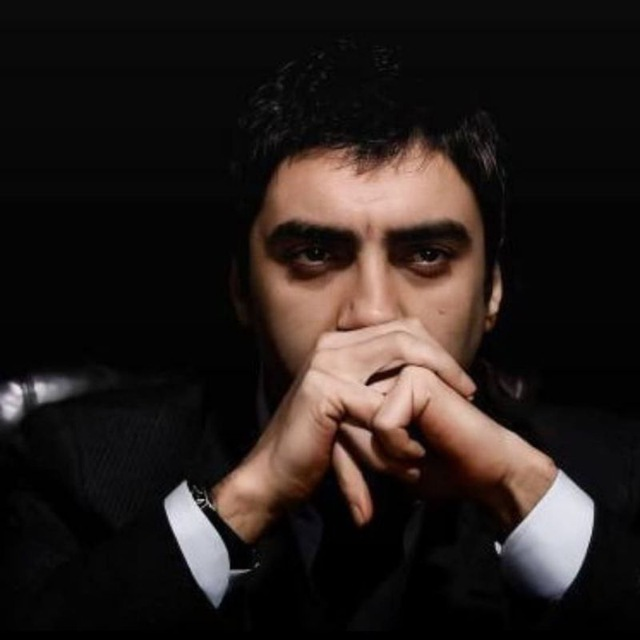

Necati Şaşmaz


Muhammed Nejati Shashmaz (turkcha: Muhammed Necati Şaşmaz: 1971-yil 15-dekabrda tugʻilgan) — turkiyalik aktyor, mashhur „Kurtlar Vadisi“ („Qashqirlar makoni“) teleserialida Poʻlat Alemdar rolini oʻynaganligi va uning „Kurtlar Vadisi Irak“ filmi bilan ham mashhur.